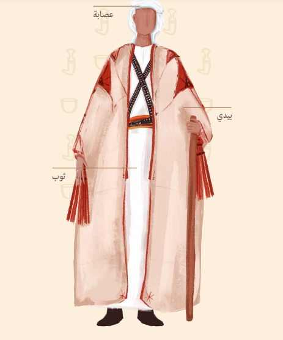
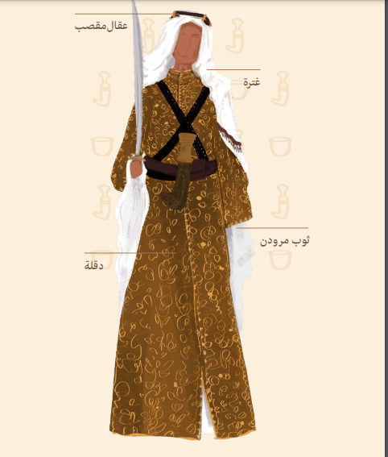
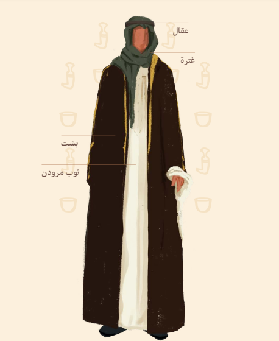
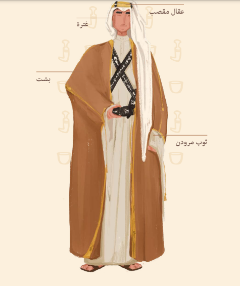
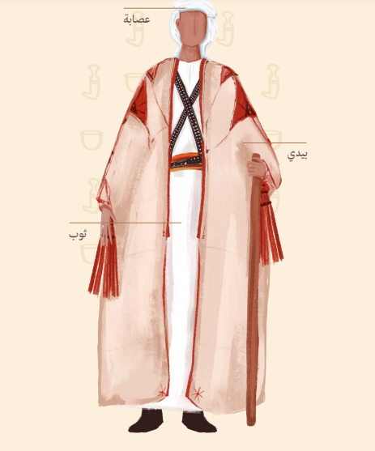
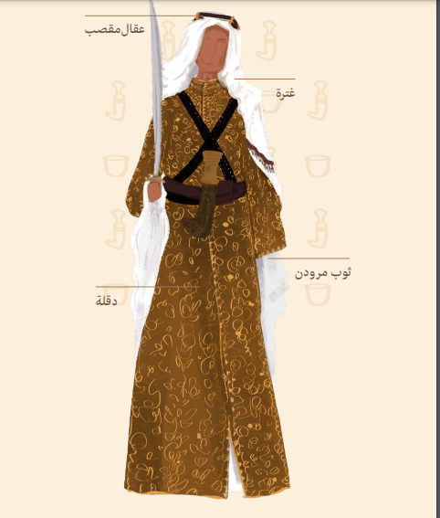
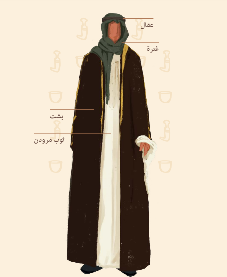
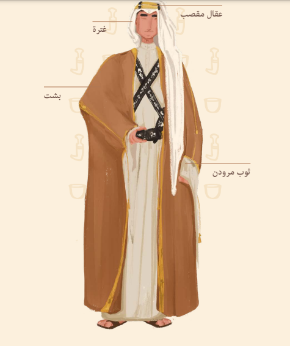

الدولة السعودية الأولى
الدولة السعودية الأولى (1157 - 1233 هـ / 1744 - 1818 م) هي دولةٌ قامت في شبه الجزيرة العربية، بعد الاتفاق الذي تمّ بين الأمير محمد بن سعود والشيخ محمد بن عبد الوهاب، والذي ترتب عليه تكوين وحدةٍ سياسيّةٍ كبيرةٍ، على أرض شبه الجزيرة العربية، ضمن العديد من الكيانات السياسية الصغيرة التي كانت تتواجد في إقليم نجد. وكونت منها وحدةً سياسيّةً تخضع لنُظمٍ واحدةٍ، وظلت هذه الدولة قائمة حتى تمكن إبراهيم باشا، والي مصر، من إسقاطها بعد استيلائه على عاصمتها الدرعية في عام 1233 هـ/1818. توالى على حكم الدولة في هذه المدة أربعة حكام، ولعبت الدولة السعودية الأولى منذ قيامها دورًا كان له آثارٌ بعيدةٌ في التغير الذي أصاب شبه الجزيرة العربية في مختلف ميادين الحياة سياسيًا واقتصاديًا واجتماعيًا وثقافيًا، حيث وحّدَت ليس فقط الكيانات النجدية الصغيرة بل امتد نفوذها على معظم أجزاء شبه الجزيرة العربية، وهددت كلًا من العراق والشام، وظلّت تتسع حتى سقطت الدرعية في عام 1818. وأحدثت الدولة السعودية الأولى نظامًا اقتصاديًا قائمًا على الشريعة الإسلامية كان له أثر بعيد على سكان المناطق التي خضعت لنفوذها ونظمت أمور هذه المناطق الاقتصادية والمالية. ونجحت في إقامة مجتمعٍ مترابطٍ اجتماعيًّا طيلة فترة سيادتها. وقد شجع حكام الدولة السعودية الأولى العلم والعلماء، وإحياء العلوم الشرعية.
يوم التأسيس
هو مناسبة وطنية للاحتفاء بذكرى تاريخ تأسيس الدولة السعودية التي أسسها الإمام محمد بن سعود منذ ثلاثة قرون عريقة؛ حيث أسس كياناً سياسياً يحقق الوحدة والاستقرار والازدهار، وفي هذا اليوم أصبحت الدرعية عاصمة الدولة السعودية الأولى.
يعد يوم التأسيس استذكاراً لامتداد الدولة السعودية من ثلاثة قرون، وإبرازاَ للعمق التاريخي والحضاري لها، واحتفاءً بالإرث الثقافي المتنوع، ووفاءً لمن أسهم في خدمة الوطن من الأئمة والملوك والمواطنين.
تولى الإمام محمد بن سعود الحكم في الدرعية في النصف الثاني من عام 1139هـ، وتم تحديد 30 جمادى الثاني 1139هـ الموافق ليوم 22 فبراير 1727م ليكون تاريخاً لتأسيس الدولة السعودية الأولى.
 






